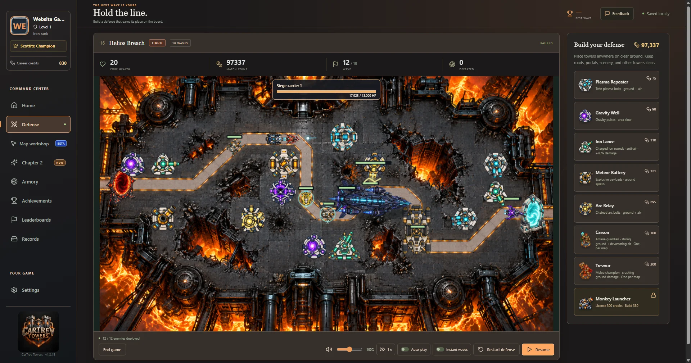
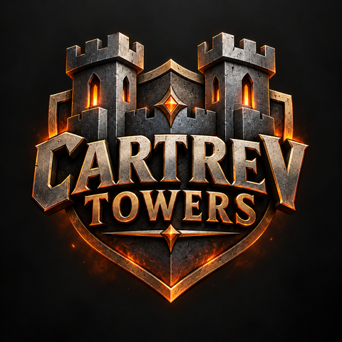
Released · Windows and Android
CarTrev Towers
Join two brothers, deploy hero towers, and hold 16 battlefields across the Four Realms.

Original worlds for phone and PC
Released games and worlds in development
Defend four realms, lead humanity into the unknown, rebuild a combat mech, or grow a frontier kingdom. See every current game first, then jump to the details that interest you.


Released · Windows and Android
Join two brothers, deploy hero towers, and hold 16 battlefields across the Four Realms.
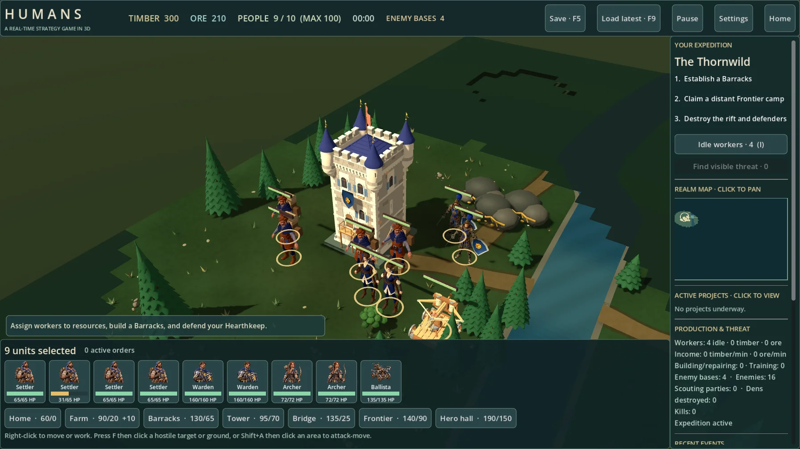
Early Access · Native 3D · Windows
Build a kingdom, command realm-specific armies, and carry humanity across three hostile 3D worlds.
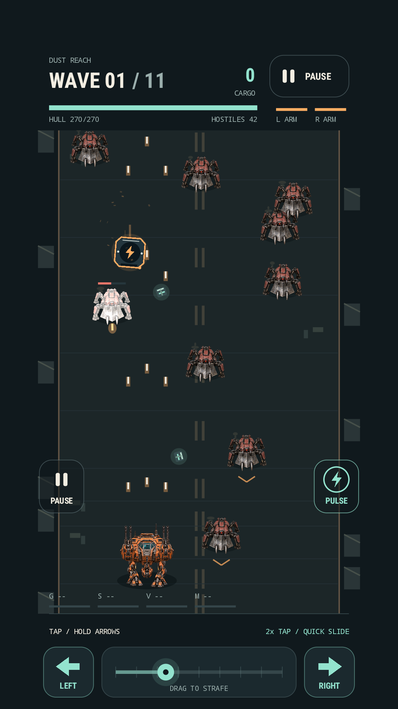
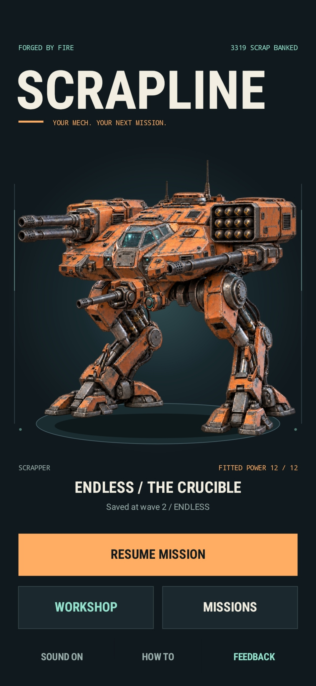
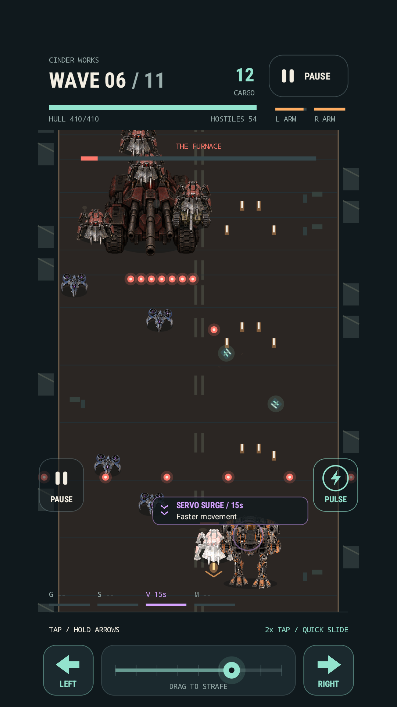
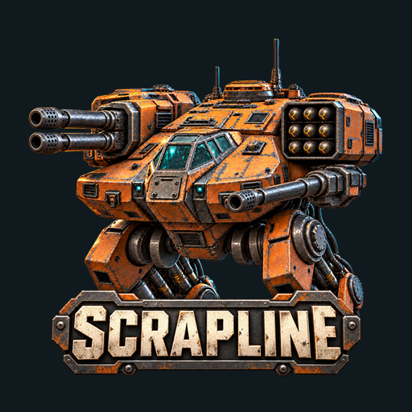
Released · Android
Fight, salvage, and rebuild a combat mech through three campaigns and an endless survival run.
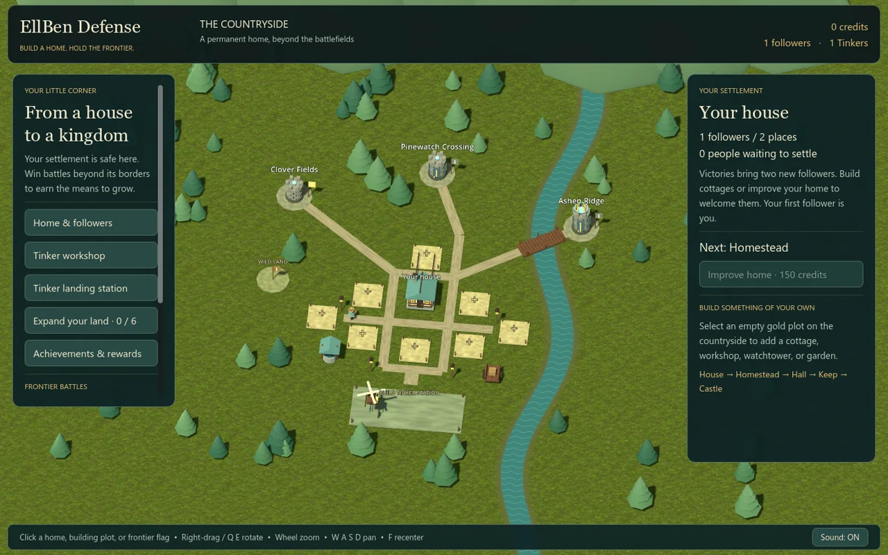
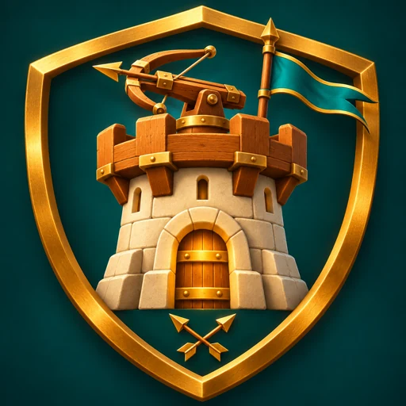
In development · Windows
Build a home, defend the frontier, welcome followers, and grow a settlement into a kingdom.
Released · Windows, Android, and browser trial
Two brothers. Four realms. One line to hold.
Carson and Trevour enter every Windows battlefield together—first as the brothers at the heart of an illustrated campaign, then as included hero towers. Follow their war against Kalz Mahan and the Forsaken through 16 victories, or play the separate touch-first Android edition and free phone-ready browser trial.
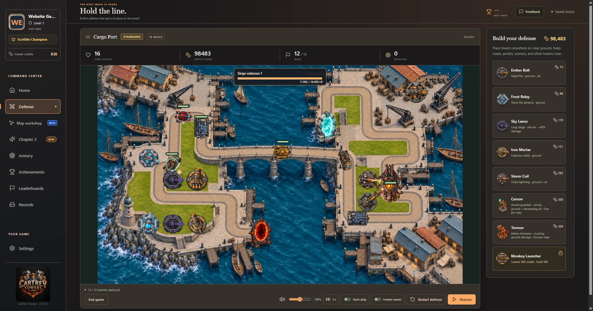
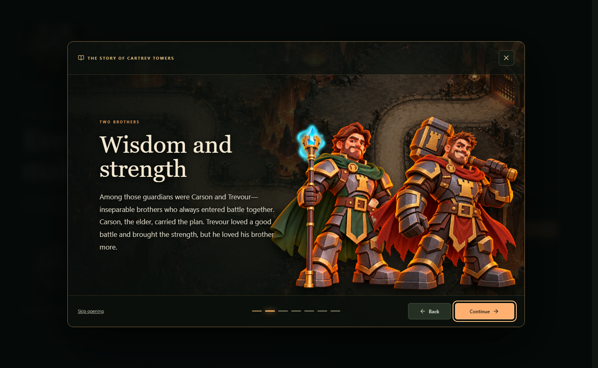
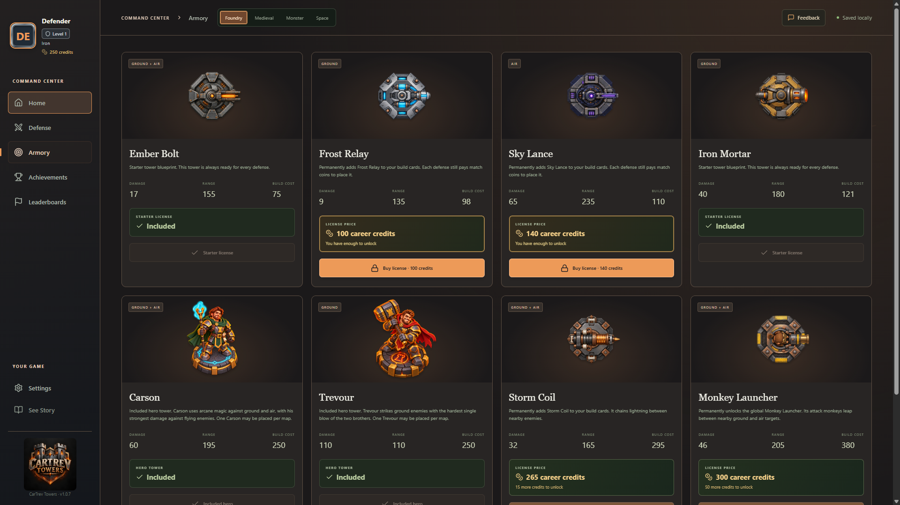
Early Access · Native Godot 3D · Windows PC
One people. Worlds beyond imagining.
Humans is an offline 3D real-time strategy game about establishing a lasting human foothold in worlds that play by different rules. Gather finite resources, build a working settlement, train realm-specific armies, hold against raids, destroy dens and rifts, and lead your people through The Thornwild, The Shattered Moon, and The Drowned Reach.
The signed Windows Early Access build is available on itch.io and plays offline. All three realms, the economy, construction, combat, objectives, Champion progression, magical gear, and local saves are working while balance, visuals, and content continue to be refined.
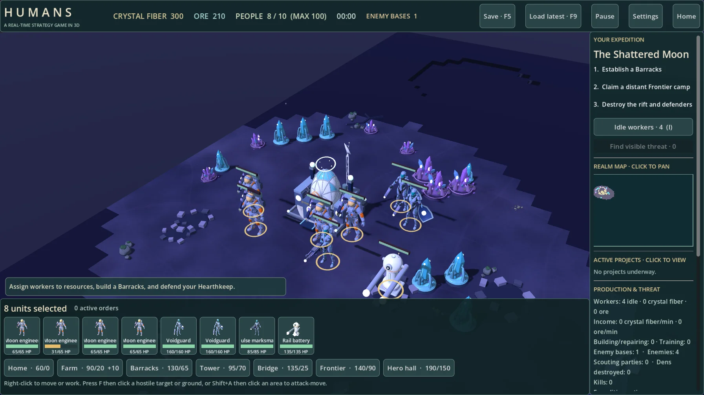
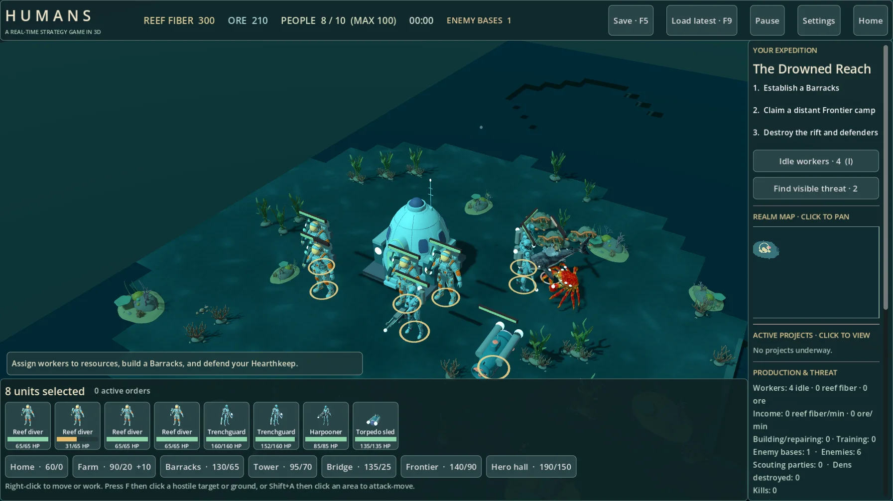
Android 1.0.0 · Available on Google Play
Your mech. Your next mission.
Enter a broken combat zone in a machine you build over time. Pilot the versatile Scrapper or earn the heavier Bulwark, recover loose scrap under fire, and protect the cargo that funds your next permanent workshop upgrade.
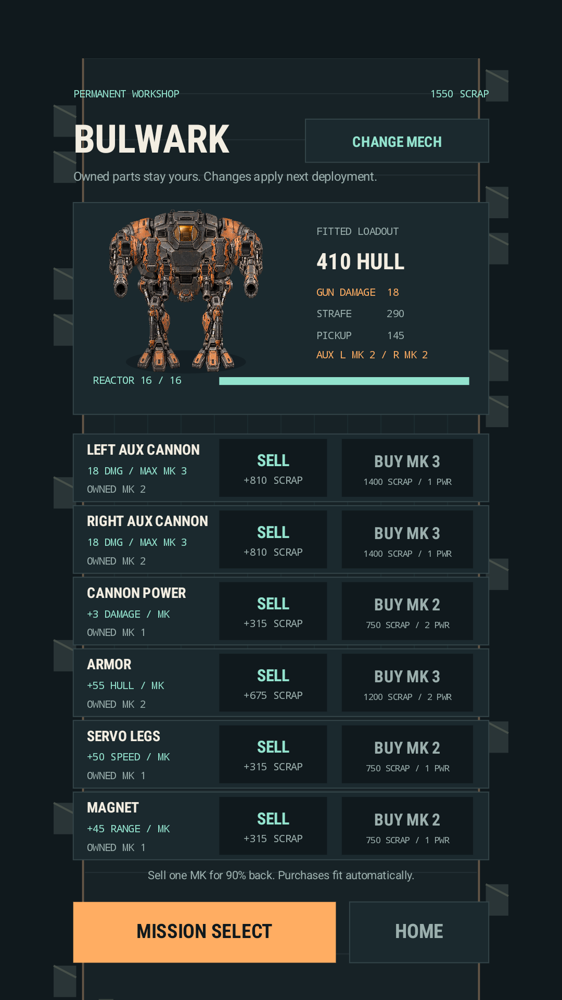
Early development · Windows PC
Build a home. Hold the frontier.
Begin with a house, one follower, and a frontier that will not defend itself. EllBen Defense connects open 3D tower-defense battles to a persistent countryside where victories earn credits, attract residents, improve your home, and turn empty plots into a growing kingdom.
The medieval realm is playable now. Art, balance, campaign story, and future realms remain in development; this is not yet a signed installer or Store release.
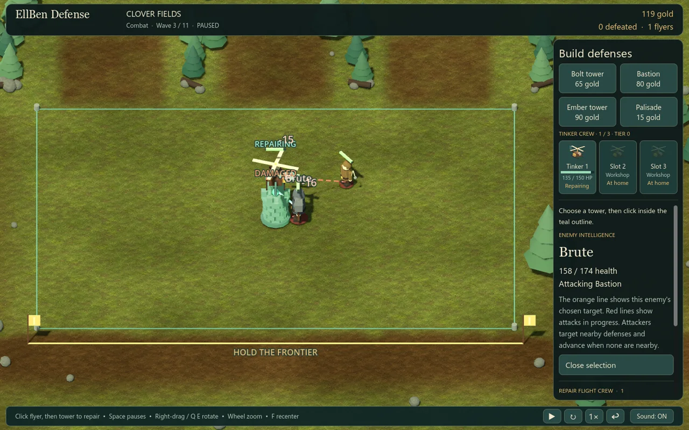
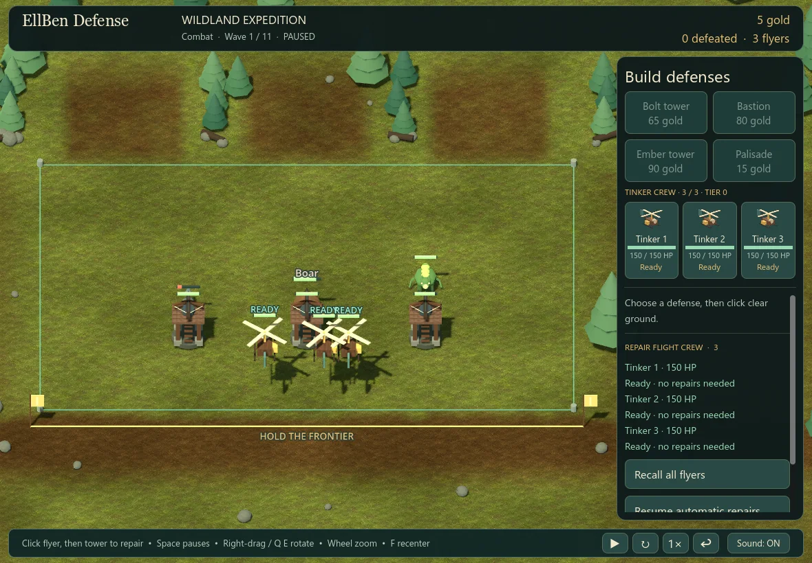